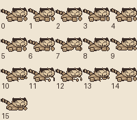
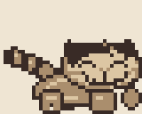

Courtyard pilot character review
Independent source and native character samples pass, 3 October 2026. The coordinator's follow-up below covers left-facing poses, the table and final water samples. No art edit is requested. Physical Chromatic review remains with the user.
First native findings
The short legs remain visible against the courtyard's stone and raised shelf. The front toe points forward instead of reading as a closed square, and the hind leg joins the low haunch. The sampled jump returns to the same low grounded stance. During the cuddle, the rear feet support the body while the approved forepaws cup a clearly pink wool ball. The fixed face and back carry remain recognizable.
I read the recording metadata and inspected frames 244 through 282 and samples across 813 through 1033. The recording identifies ROM SHA-256 726e979f688a8e07c1d61d54dbef3f19f7b0eb7be7905a755a62f5ccdb08ea2d, captured by PyBoy 2.7.0. These are genuine native frames. Reviewing the sampled sequence supports pose and contact continuity; it does not establish unsampled frame pacing or hardware motion.


Native recording metadata and frame index. The builder retained runtime ownership during this review. The art reviewer used files only.
Source verdict
The source revision resolves the block-shaped feet without making Kittie taller or changing his face. No further source edit is requested.
What changed
The new foreleg narrows beneath the cheek and angles into a low toe. The hind leg now flows from the haunch into a short rearward foot. At 1× the feet read as attached limbs; at 4× their small contour steps explain the bend. The body already sits low enough. Lowering it further would hide useful leg space.
The original front photograph supports the foreleg's narrow attachment and broad, flattened end. The side photograph supports the low belly and rearward hind leg. Both originals were inspected in the owner's reference folder. The source stays within that anatomy while retaining the approved native face and silhouette above the legs.



Identity and motion checks
An independent pixel comparison against kittie-pilot-before.png found the outer face and ear mask unchanged in all 16 frames. The cuddle forepaw and ball-space rectangle, x25 through 39 and y24 through 31, is exact in frames 10 through 13. The changed pixels remain in the lower body. The saved baseline and pilot sheets both remain 640×32 pixels.
The four walking poses alternate a small toe lift with contact rather than lifting the whole body. Reach and air tuck keep the same leg anatomy. The source sequence and timing were inspected, but a GIF's still preview does not establish movement quality. The supplied source loop also omits the cuddle. The native evidence above supplies the carry and cuddle check with the runtime ball actor.

Follow-up requested by the art reviewer
The initial review requested left-facing contact and lift poses and the final table sequence, with the actual HUD and nearby actors. The coordinator's follow-up below supplies additional native samples. The first independent native sequence above covers right-facing jump-to-landing, carry and cuddle.
World motion
The approved presentation work includes a livelier world: swaying leaves, rippling water, fluttering bunting and expressive enemy reactions are possible choices. The pilot includes a restrained water ripple. Preserve the channel banks and bright top edge exactly. Move only the short interior streaks by one pixel through a small loop, with upper and lower streaks offset in phase. Keep their length and colors steady so the water never flashes or changes its apparent boundary.
The recommendation was 8 to 12 updates per phase, checked in a fixed-camera capture across one complete loop and a jump across the channel. The final implementation uses eight updates per phase. Native evidence appears in the coordinator's follow-up below.
The current animation manifest reports 42 unique 8×16 pairs and a maximum of five Kittie objects per scanline. Those are source figures. The builder and verifier own compiled allocation and total actor pressure. This reviewer has not built the game or opened an emulator.
Coordinator's native follow-up
The coordinator inspected genuine pilot2 frames 1037 and 1041 for left-facing carry and foot poses, and 1253 and 1307 for table, bell, guard and throwing readability. The feet remain distinct against the shelf; the ball, bell and guard are distinguishable in the table room. This is an additional coordinator check, not a claim that the independent art agent inspected those samples.
For the final candidate, SHA-256 1618bccf2765d0138271626924fd87a51d4d4fe85bc6b26c1f18920b6c9dcb42, the coordinator inspected frames 699, 715 and 801 from the water recording. The bright boundary and stone banks remain fixed, the interior strokes move, and the landing remains legible. The builder's compiled tile map shows both animated patterns occur only in the 24 water cells. Its native scanline sample peaks at six objects, below the ten-object limit.

These checks cover sampled poses, native allocation and recorded motion. They do not claim a new physical-device test. The independent gameplay critic completed the full level and sampled the crowded table room at a peak of nine objects per scanline, with no disappearance. The subsequent bell-position correction leaves character art and water animation unchanged. The coordinator also inspected the revised normal-shot recovery and 900-point native frames.